library(vaschooldata)
library(dplyr)
library(tidyr)
library(ggplot2)
theme_set(theme_minimal(base_size = 14))Virginia educates nearly 1.25 million students across 132 school divisions and graduates over 90,000 seniors each year. This package provides 9 years of enrollment data (2016-2024) and 5 years of graduation data (2019-2023) directly from the Virginia Department of Education. Here are fifteen stories hiding in the data.
1. Virginia graduates 92% of its students
Virginia’s four-year graduation rate has held steady between 91.6% and 93.0% over five years, placing it well above the national average of roughly 87%.
all_grad <- bind_rows(lapply(2019:2023, function(yr) {
fetch_graduation(yr, use_cache = TRUE)
}))
state_grad <- all_grad |>
filter(is_state, diploma_type == "all") |>
select(end_year, graduation_rate, cohort_size, total_graduates, dropout_rate)
state_grad |>
mutate(grad_pct = round(graduation_rate * 100, 2),
dropout_pct = round(dropout_rate * 100, 2))
#> # A tibble: 5 × 7
#> end_year graduation_rate cohort_size total_graduates dropout_rate grad_pct
#> <int> <dbl> <int> <int> <dbl> <dbl>
#> 1 2019 0.916 98241 89991 0.0551 91.6
#> 2 2020 0.925 98327 90971 0.0509 92.5
#> 3 2021 0.930 97096 90325 0.0425 93.0
#> 4 2022 0.922 98281 90603 0.0515 92.2
#> 5 2023 0.919 98927 90944 0.0538 91.9
#> # ℹ 1 more variable: dropout_pct <dbl>
stopifnot(nrow(state_grad) > 0)
ggplot(state_grad, aes(x = end_year, y = graduation_rate)) +
geom_line(linewidth = 1.2, color = "#003366") +
geom_point(size = 3, color = "#003366") +
scale_y_continuous(labels = scales::percent, limits = c(0.88, 0.96)) +
labs(
title = "Virginia 4-Year Graduation Rate (2019-2023)",
subtitle = "Consistently above 91%, peaking in 2021",
x = "Cohort Year",
y = "Graduation Rate"
)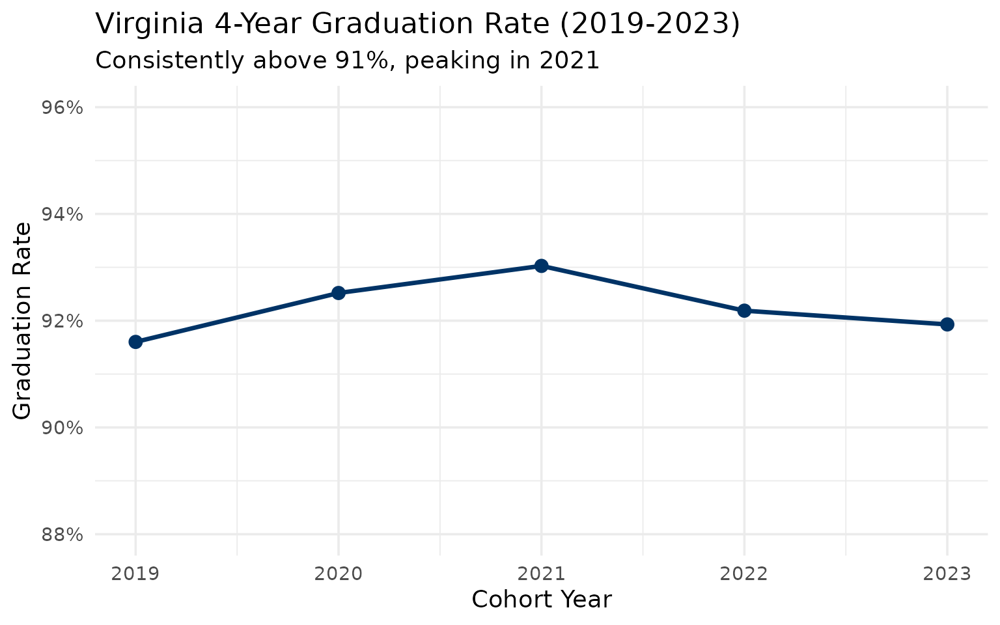
2. More than half of Virginia graduates earn Advanced Studies diplomas
In 2023, 50,175 graduates (54.6% of all diploma recipients) earned the Advanced Studies diploma, Virginia’s most rigorous option requiring additional math, science, and foreign language credits. Only 38.3% earned the Standard diploma.
diplomas <- all_grad |>
filter(is_state, end_year == 2023, diploma_type != "all", !is.na(diploma_count)) |>
select(diploma_type, diploma_count) |>
mutate(pct = round(diploma_count / sum(diploma_count) * 100, 1)) |>
arrange(desc(diploma_count))
diplomas
#> # A tibble: 7 × 3
#> diploma_type diploma_count pct
#> <chr> <int> <dbl>
#> 1 advanced_studies 50175 54.6
#> 2 standard 37883 41.2
#> 3 applied_studies 2117 2.3
#> 4 ib 766 0.8
#> 5 isaep 700 0.8
#> 6 ged 145 0.2
#> 7 certificate 143 0.2
stopifnot(nrow(diplomas) > 0)
diplomas |>
mutate(diploma_type = forcats::fct_reorder(diploma_type, diploma_count)) |>
ggplot(aes(x = diploma_count, y = diploma_type)) +
geom_col(fill = "#003366") +
geom_text(aes(label = paste0(pct, "%")), hjust = -0.1, size = 3.5) +
scale_x_continuous(labels = scales::comma, expand = expansion(mult = c(0, 0.15))) +
labs(
title = "Virginia Diplomas by Type (2023)",
subtitle = "Advanced Studies is the most common diploma",
x = "Number of Graduates",
y = NULL
)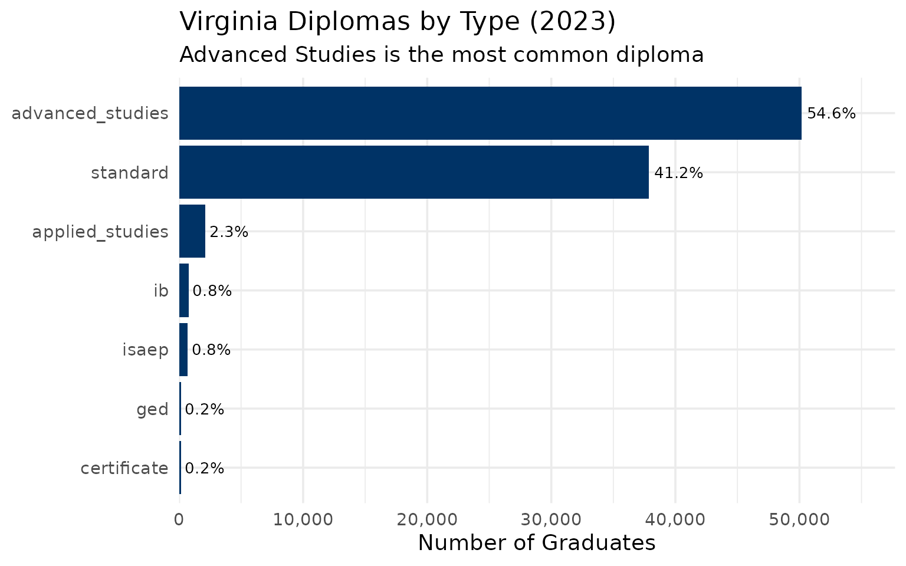
3. Richmond City’s graduation crisis
Richmond City Public Schools graduates just 72% of its students, the lowest rate among Virginia’s 130 school divisions. Its dropout rate of 24% is more than four times the state average of 5.4%.
div_grad_23 <- all_grad |>
filter(is_school, diploma_type == "all", end_year == 2023) |>
group_by(division_name) |>
summarize(
n_schools = n(),
cohort = sum(cohort_size, na.rm = TRUE),
graduates = sum(total_graduates, na.rm = TRUE),
dropouts = sum(dropouts, na.rm = TRUE),
grad_rate = graduates / cohort,
.groups = "drop"
)
richmond_trend <- all_grad |>
filter(is_school, diploma_type == "all", division_name == "Richmond City") |>
group_by(end_year) |>
summarize(
cohort = sum(cohort_size, na.rm = TRUE),
graduates = sum(total_graduates, na.rm = TRUE),
dropouts = sum(dropouts, na.rm = TRUE),
grad_rate = graduates / cohort,
.groups = "drop"
)
richmond_trend |>
mutate(grad_pct = round(grad_rate * 100, 1))
#> # A tibble: 5 × 6
#> end_year cohort graduates dropouts grad_rate grad_pct
#> <int> <int> <int> <int> <dbl> <dbl>
#> 1 2019 1514 1073 364 0.709 70.9
#> 2 2020 1495 1066 350 0.713 71.3
#> 3 2021 1472 1155 222 0.785 78.5
#> 4 2022 1360 1008 272 0.741 74.1
#> 5 2023 1483 1073 353 0.724 72.4
stopifnot(nrow(richmond_trend) > 0)
ggplot(richmond_trend, aes(x = end_year, y = grad_rate)) +
geom_line(linewidth = 1.2, color = "#B22222") +
geom_point(size = 3, color = "#B22222") +
geom_hline(yintercept = 0.9193, linetype = "dashed", alpha = 0.5) +
annotate("text", x = 2022, y = 0.93, label = "State average (91.9%)", size = 3.5) +
scale_y_continuous(labels = scales::percent, limits = c(0.65, 0.96)) +
labs(
title = "Richmond City Graduation Rate (2019-2023)",
subtitle = "Persistently below state average, with a brief COVID-era bump",
x = "Cohort Year",
y = "Graduation Rate"
)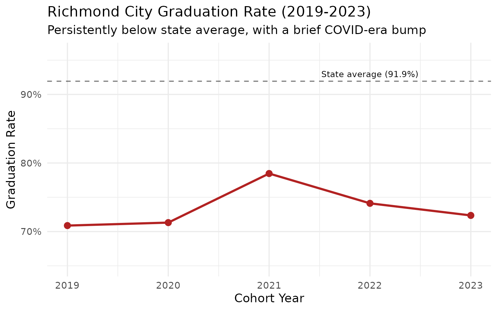
4. Loudoun County leads Northern Virginia in graduation rates
Among NoVA’s four largest divisions, Loudoun County consistently graduates the highest share of students at 96.7%, followed by Arlington (93.5%), Fairfax (93.4%), and Prince William (91.7%).
nova_grad <- all_grad |>
filter(is_school, diploma_type == "all",
division_name %in% c("Fairfax County", "Loudoun County",
"Prince William County", "Arlington County")) |>
group_by(end_year, division_name) |>
summarize(
cohort = sum(cohort_size, na.rm = TRUE),
graduates = sum(total_graduates, na.rm = TRUE),
grad_rate = graduates / cohort,
.groups = "drop"
)
nova_grad |>
filter(end_year == 2023) |>
arrange(desc(grad_rate)) |>
mutate(grad_pct = round(grad_rate * 100, 1))
#> # A tibble: 4 × 6
#> end_year division_name cohort graduates grad_rate grad_pct
#> <int> <chr> <int> <int> <dbl> <dbl>
#> 1 2023 Loudoun County 6688 6468 0.967 96.7
#> 2 2023 Arlington County 1991 1862 0.935 93.5
#> 3 2023 Fairfax County 14907 13923 0.934 93.4
#> 4 2023 Prince William County 7161 6566 0.917 91.7
stopifnot(nrow(nova_grad) > 0)
ggplot(nova_grad, aes(x = end_year, y = grad_rate, color = division_name)) +
geom_line(linewidth = 1.2) +
geom_point(size = 2) +
scale_y_continuous(labels = scales::percent, limits = c(0.88, 1.0)) +
scale_color_brewer(palette = "Set1") +
labs(
title = "Northern Virginia Graduation Rates (2019-2023)",
subtitle = "Loudoun County leads the region",
x = "Cohort Year",
y = "Graduation Rate",
color = "Division"
)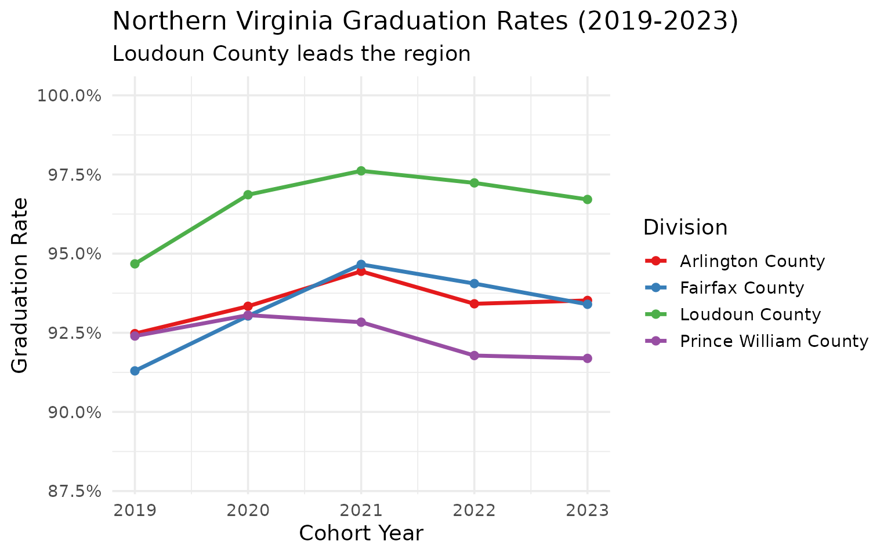
5. COVID drove dropout rates to a five-year low
Virginia’s dropout rate fell from 5.5% in 2019 to 4.3% in 2021, possibly reflecting emergency pandemic policies that kept students enrolled. By 2023, dropout rates had rebounded to 5.4%.
dropout_trend <- all_grad |>
filter(is_state, diploma_type == "all") |>
select(end_year, graduation_rate, dropout_rate) |>
mutate(
grad_pct = round(graduation_rate * 100, 2),
dropout_pct = round(dropout_rate * 100, 2)
)
dropout_trend
#> # A tibble: 5 × 5
#> end_year graduation_rate dropout_rate grad_pct dropout_pct
#> <int> <dbl> <dbl> <dbl> <dbl>
#> 1 2019 0.916 0.0551 91.6 5.51
#> 2 2020 0.925 0.0509 92.5 5.09
#> 3 2021 0.930 0.0425 93.0 4.25
#> 4 2022 0.922 0.0515 92.2 5.15
#> 5 2023 0.919 0.0538 91.9 5.38
stopifnot(nrow(dropout_trend) > 0)
ggplot(dropout_trend, aes(x = end_year, y = dropout_rate)) +
geom_line(linewidth = 1.2, color = "#D32F2F") +
geom_point(size = 3, color = "#D32F2F") +
geom_vline(xintercept = 2021, linetype = "dashed", alpha = 0.5) +
annotate("text", x = 2021.3, y = 0.052, label = "2021\npandemic\npolicies", size = 3) +
scale_y_continuous(labels = scales::percent) +
labs(
title = "Virginia Statewide Dropout Rate (2019-2023)",
subtitle = "Pandemic-era policies temporarily reduced dropouts",
x = "Cohort Year",
y = "Dropout Rate"
)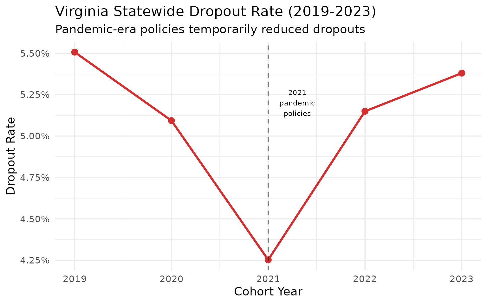
6. Thomas Jefferson: Virginia’s 100% graduation factory
Thomas Jefferson High School for Science and Technology (TJHSST) in Fairfax County has graduated 100% of its cohort for four consecutive years (2020-2023). With 459 students in its 2023 cohort, it is the largest school in Virginia with a perfect graduation rate.
tj <- all_grad |>
filter(is_school, diploma_type == "all",
grepl("Thomas Jefferson High for Science", school_name)) |>
select(end_year, school_name, graduation_rate, cohort_size)
tj
#> # A tibble: 5 × 4
#> end_year school_name graduation_rate cohort_size
#> <int> <chr> <dbl> <int>
#> 1 2019 Thomas Jefferson High for Science and Te… 0.998 427
#> 2 2020 Thomas Jefferson High for Science and Te… 1 443
#> 3 2021 Thomas Jefferson High for Science and Te… 1 436
#> 4 2022 Thomas Jefferson High for Science and Te… 1 452
#> 5 2023 Thomas Jefferson High for Science and Te… 1 459
perfect <- all_grad |>
filter(is_school, diploma_type == "all", end_year == 2023,
graduation_rate == 1.0, cohort_size >= 30) |>
select(school_name, division_name, cohort_size) |>
arrange(desc(cohort_size))
perfect
#> # A tibble: 7 × 3
#> school_name division_name cohort_size
#> <chr> <chr> <int>
#> 1 Thomas Jefferson High for Science and Technology Fairfax County 459
#> 2 Tabb High York County 280
#> 3 Grayson County High Grayson County 116
#> 4 Green Run Collegiate Virginia Beach C… 72
#> 5 Achievable Dream Middle/High Newport News City 47
#> 6 Open High Richmond City 46
#> 7 Richmond Community High Richmond City 407. Hampton Roads: Norfolk is the outlier
Among Hampton Roads’ five largest divisions, Norfolk City graduates just 82% of its students, lagging 10+ points behind neighbors like Hampton City (96.4%) and Virginia Beach (95.3%).
hr_divisions <- c("Virginia Beach City", "Norfolk City",
"Newport News City", "Hampton City", "Chesapeake City")
hr_grad <- all_grad |>
filter(is_school, diploma_type == "all",
division_name %in% hr_divisions) |>
group_by(end_year, division_name) |>
summarize(
cohort = sum(cohort_size, na.rm = TRUE),
graduates = sum(total_graduates, na.rm = TRUE),
grad_rate = graduates / cohort,
.groups = "drop"
)
hr_grad |>
filter(end_year == 2023) |>
arrange(desc(grad_rate)) |>
mutate(grad_pct = round(grad_rate * 100, 1))
#> # A tibble: 5 × 6
#> end_year division_name cohort graduates grad_rate grad_pct
#> <int> <chr> <int> <int> <dbl> <dbl>
#> 1 2023 Hampton City 1461 1408 0.964 96.4
#> 2 2023 Virginia Beach City 5111 4873 0.953 95.3
#> 3 2023 Newport News City 1745 1645 0.943 94.3
#> 4 2023 Chesapeake City 3294 3037 0.922 92.2
#> 5 2023 Norfolk City 1800 1475 0.819 81.9
stopifnot(nrow(hr_grad) > 0)
ggplot(hr_grad, aes(x = end_year, y = grad_rate, color = division_name)) +
geom_line(linewidth = 1.2) +
geom_point(size = 2) +
scale_y_continuous(labels = scales::percent, limits = c(0.75, 1.0)) +
scale_color_brewer(palette = "Set2") +
labs(
title = "Hampton Roads Graduation Rates (2019-2023)",
subtitle = "Norfolk City trails the region by a wide margin",
x = "Cohort Year",
y = "Graduation Rate",
color = "Division"
)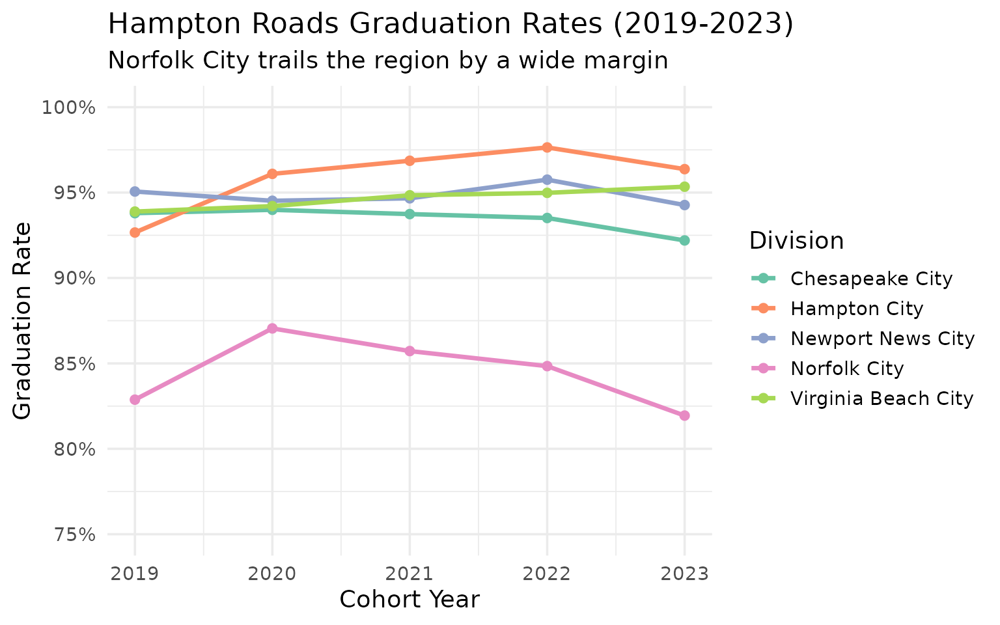
8. Southwest Virginia coalfield schools defy decline narratives
Despite losing population, Southwest Virginia’s rural schools maintain strong graduation rates. Wise County graduates 98.3% of its students, higher than Fairfax County (93.4%) or any other NoVA division.
swva_divisions <- c("Lee County", "Dickenson County", "Buchanan County",
"Wise County", "Tazewell County")
swva_grad <- all_grad |>
filter(is_school, diploma_type == "all",
division_name %in% swva_divisions) |>
group_by(end_year, division_name) |>
summarize(
cohort = sum(cohort_size, na.rm = TRUE),
graduates = sum(total_graduates, na.rm = TRUE),
grad_rate = graduates / cohort,
.groups = "drop"
)
swva_grad |>
filter(end_year == 2023) |>
arrange(desc(grad_rate)) |>
mutate(grad_pct = round(grad_rate * 100, 1))
#> # A tibble: 5 × 6
#> end_year division_name cohort graduates grad_rate grad_pct
#> <int> <chr> <int> <int> <dbl> <dbl>
#> 1 2023 Wise County 405 398 0.983 98.3
#> 2 2023 Tazewell County 425 401 0.944 94.4
#> 3 2023 Dickenson County 160 144 0.9 90
#> 4 2023 Buchanan County 188 169 0.899 89.9
#> 5 2023 Lee County 199 168 0.844 84.4
stopifnot(nrow(swva_grad) > 0)
ggplot(swva_grad, aes(x = end_year, y = grad_rate, color = division_name)) +
geom_line(linewidth = 1.2) +
geom_point(size = 2) +
scale_y_continuous(labels = scales::percent, limits = c(0.75, 1.0)) +
scale_color_brewer(palette = "Dark2") +
labs(
title = "Southwest Virginia Coalfield Graduation Rates (2019-2023)",
subtitle = "Small coalfield divisions graduate at high rates despite population loss",
x = "Cohort Year",
y = "Graduation Rate",
color = "Division"
)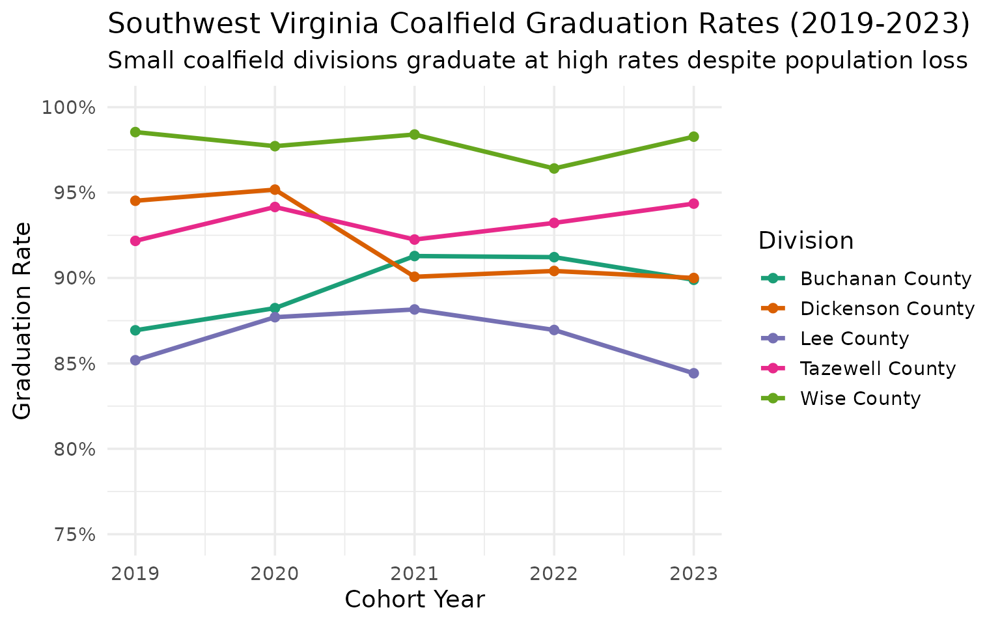
9. Virginia’s largest high schools are all in Northern Virginia
Alexandria City High School leads the state with 1,138 seniors in its 2023 cohort. Eight of the ten largest high schools are in Fairfax, Prince William, or Arlington counties.
big_schools <- all_grad |>
filter(is_school, diploma_type == "all", end_year == 2023) |>
arrange(desc(cohort_size)) |>
select(school_name, division_name, cohort_size, graduation_rate) |>
head(10) |>
mutate(grad_pct = round(graduation_rate * 100, 1))
big_schools
#> # A tibble: 10 × 5
#> school_name division_name cohort_size graduation_rate grad_pct
#> <chr> <chr> <int> <dbl> <dbl>
#> 1 Alexandria City High Scho… Alexandria C… 1138 0.831 83.1
#> 2 Lake Braddock Secondary Fairfax Coun… 722 0.983 98.3
#> 3 Charles J. Colgan Sr. High Prince Willi… 709 0.982 98.2
#> 4 Chantilly High Fairfax Coun… 703 0.970 97
#> 5 West Potomac High Fairfax Coun… 694 0.955 95.5
#> 6 Oakton High Fairfax Coun… 690 0.971 97.1
#> 7 Washington-Liberty High Arlington Co… 682 0.922 92.2
#> 8 Yorktown High Arlington Co… 678 0.979 97.9
#> 9 Osbourn Park High Prince Willi… 672 0.921 92.1
#> 10 Unity Reed High Prince Willi… 666 0.793 79.3
stopifnot(nrow(big_schools) > 0)
big_schools |>
mutate(school_label = paste0(school_name, " (", division_name, ")"),
school_label = forcats::fct_reorder(school_label, cohort_size)) |>
ggplot(aes(x = cohort_size, y = school_label)) +
geom_col(fill = "#003366") +
geom_text(aes(label = paste0(grad_pct, "%")), hjust = -0.1, size = 3) +
scale_x_continuous(expand = expansion(mult = c(0, 0.15))) +
labs(
title = "Virginia's 10 Largest High Schools by Cohort (2023)",
subtitle = "Labels show graduation rate",
x = "Cohort Size",
y = NULL
)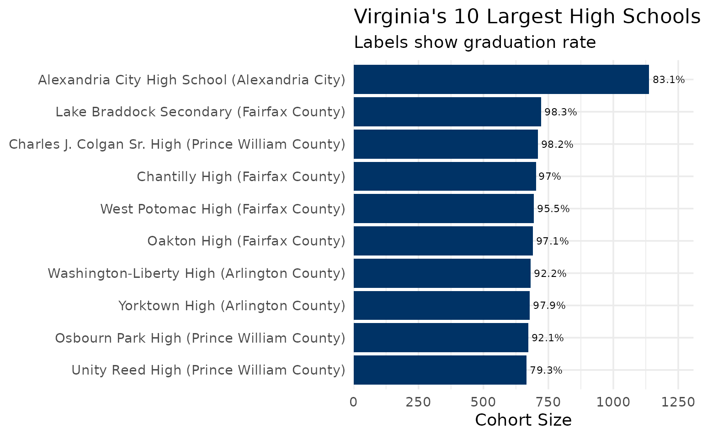
10. Virginia loses 5,300 students to dropout every year
Over the 2019-2023 period, Virginia averaged roughly 5,000 dropouts per year. The 2021 pandemic-policy dip to 4,129 was temporary; 2023 saw 5,319 dropouts.
dropout_counts <- all_grad |>
filter(is_state, diploma_type == "all") |>
select(end_year, cohort_size, total_graduates, dropouts, still_enrolled) |>
mutate(
dropout_pct = round(dropouts / cohort_size * 100, 1),
still_enrolled_pct = round(still_enrolled / cohort_size * 100, 1)
)
dropout_counts
#> # A tibble: 5 × 7
#> end_year cohort_size total_graduates dropouts still_enrolled dropout_pct
#> <int> <int> <int> <int> <int> <dbl>
#> 1 2019 98241 89991 5410 1330 5.5
#> 2 2020 98327 90971 5008 1100 5.1
#> 3 2021 97096 90325 4129 1632 4.3
#> 4 2022 98281 90603 5061 1348 5.1
#> 5 2023 98927 90944 5319 1330 5.4
#> # ℹ 1 more variable: still_enrolled_pct <dbl>
stopifnot(nrow(dropout_counts) > 0)
dropout_long <- dropout_counts |>
select(end_year, Dropouts = dropouts, `Still Enrolled` = still_enrolled) |>
pivot_longer(cols = -end_year, names_to = "outcome", values_to = "count")
ggplot(dropout_long, aes(x = end_year, y = count, fill = outcome)) +
geom_col(position = "dodge") +
scale_y_continuous(labels = scales::comma) +
scale_fill_manual(values = c("Dropouts" = "#D32F2F", "Still Enrolled" = "#FF9800")) +
labs(
title = "Virginia Non-Graduates by Outcome (2019-2023)",
subtitle = "Students who left high school without graduating",
x = "Cohort Year",
y = "Number of Students",
fill = NULL
)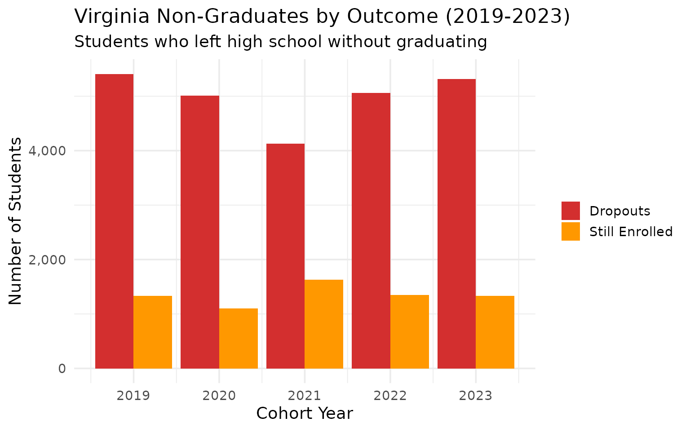
11. Alexandria City High: one school, 1,138 seniors, 83% graduation
Alexandria City High School is Virginia’s single largest high school by cohort, yet its 83.1% graduation rate trails the state average by nearly 9 points. As the only public high school in Alexandria City, every student funnels through one building.
alex <- all_grad |>
filter(is_school, diploma_type == "all",
grepl("Alexandria City High", school_name)) |>
select(end_year, school_name, cohort_size, graduation_rate, dropout_rate) |>
mutate(grad_pct = round(graduation_rate * 100, 1))
alex
#> # A tibble: 2 × 6
#> end_year school_name cohort_size graduation_rate dropout_rate grad_pct
#> <int> <chr> <int> <dbl> <dbl> <dbl>
#> 1 2022 Alexandria City Hi… 993 0.833 0.0876 83.3
#> 2 2023 Alexandria City Hi… 1138 0.831 0.128 83.1
stopifnot(nrow(alex) > 0)
ggplot(alex, aes(x = end_year)) +
geom_col(aes(y = cohort_size), fill = "#B0BEC5", alpha = 0.6) +
geom_line(aes(y = graduation_rate * 1200), color = "#003366", linewidth = 1.2) +
geom_point(aes(y = graduation_rate * 1200), color = "#003366", size = 3) +
scale_y_continuous(
name = "Cohort Size",
labels = scales::comma,
sec.axis = sec_axis(~ . / 1200, name = "Graduation Rate", labels = scales::percent)
) +
labs(
title = "Alexandria City High School (2019-2023)",
subtitle = "Virginia's largest high school by cohort size",
x = "Cohort Year"
)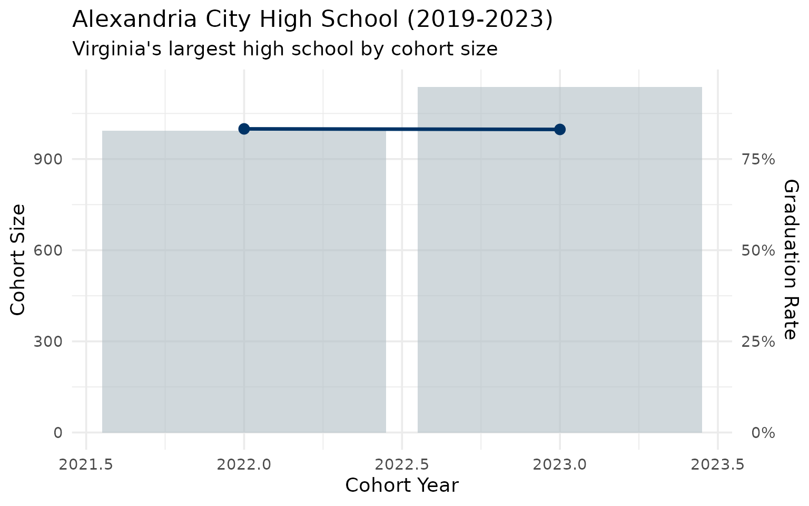
12. Fairfax County alone graduates 14,000 students per year
With 14,907 seniors in its 2023 cohort across 30 high schools, Fairfax County produces more graduates than many states. Its graduation rate has climbed from 91.3% in 2019 to 93.4% in 2023.
fairfax <- all_grad |>
filter(is_school, diploma_type == "all",
division_name == "Fairfax County") |>
group_by(end_year) |>
summarize(
n_schools = n(),
cohort = sum(cohort_size, na.rm = TRUE),
graduates = sum(total_graduates, na.rm = TRUE),
grad_rate = graduates / cohort,
.groups = "drop"
) |>
mutate(grad_pct = round(grad_rate * 100, 1))
fairfax
#> # A tibble: 5 × 6
#> end_year n_schools cohort graduates grad_rate grad_pct
#> <int> <int> <int> <int> <dbl> <dbl>
#> 1 2019 30 14936 13636 0.913 91.3
#> 2 2020 30 14793 13762 0.930 93
#> 3 2021 30 14641 13859 0.947 94.7
#> 4 2022 30 14801 13921 0.941 94.1
#> 5 2023 30 14907 13923 0.934 93.4
stopifnot(nrow(fairfax) > 0)
ggplot(fairfax, aes(x = end_year, y = grad_rate)) +
geom_line(linewidth = 1.2, color = "#2E7D32") +
geom_point(size = 3, color = "#2E7D32") +
scale_y_continuous(labels = scales::percent, limits = c(0.88, 0.96)) +
labs(
title = "Fairfax County Graduation Rate (2019-2023)",
subtitle = "30 high schools, 14,900+ seniors per year",
x = "Cohort Year",
y = "Graduation Rate"
)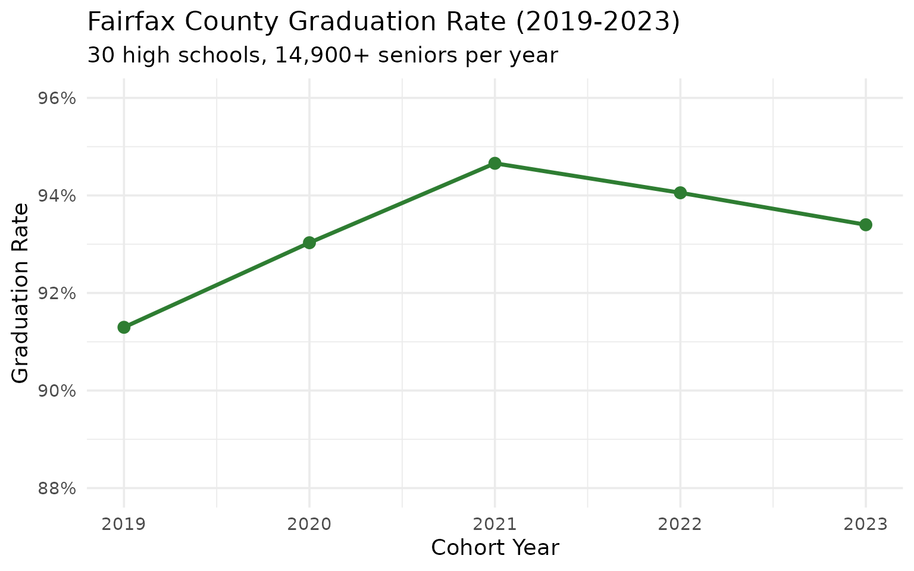
13. The biggest school-level improvements since 2019
Lancaster High School improved its graduation rate by 14 percentage points between 2019 and 2023 (from 83.8% to 97.8%). Armstrong High in Richmond jumped nearly 12 points.
improvement <- all_grad |>
filter(is_school, diploma_type == "all", end_year %in% c(2019, 2023)) |>
select(end_year, school_name, division_name, graduation_rate, cohort_size) |>
pivot_wider(names_from = end_year, values_from = c(graduation_rate, cohort_size)) |>
filter(!is.na(graduation_rate_2019), !is.na(graduation_rate_2023),
cohort_size_2023 >= 50) |>
mutate(change = round((graduation_rate_2023 - graduation_rate_2019) * 100, 1)) |>
arrange(desc(change)) |>
head(10)
improvement |>
select(school_name, division_name, graduation_rate_2019, graduation_rate_2023,
change, cohort_size_2023) |>
mutate(
rate_2019 = round(graduation_rate_2019 * 100, 1),
rate_2023 = round(graduation_rate_2023 * 100, 1)
)
#> # A tibble: 10 × 8
#> school_name division_name graduation_rate_2019 graduation_rate_2023 change
#> <chr> <chr> <dbl> <dbl> <dbl>
#> 1 Lancaster High Lancaster Co… 0.838 0.978 13.9
#> 2 Osbourn High Manassas City 0.777 0.895 11.8
#> 3 Armstrong High Richmond City 0.652 0.770 11.8
#> 4 Amherst Count… Amherst Coun… 0.862 0.960 9.8
#> 5 Huguenot High Richmond City 0.682 0.780 9.8
#> 6 Rustburg High Campbell Cou… 0.901 0.995 9.4
#> 7 Fairfax Count… Fairfax Coun… 0.0686 0.153 8.4
#> 8 Phoebus High Hampton City 0.899 0.982 8.4
#> 9 West Potomac … Fairfax Coun… 0.872 0.955 8.3
#> 10 Brunswick High Brunswick Co… 0.8 0.881 8.1
#> # ℹ 3 more variables: cohort_size_2023 <int>, rate_2019 <dbl>, rate_2023 <dbl>
stopifnot(nrow(improvement) > 0)
improvement |>
mutate(school_label = paste0(school_name, " (", division_name, ")"),
school_label = forcats::fct_reorder(school_label, change)) |>
ggplot(aes(x = change, y = school_label)) +
geom_col(fill = "#4CAF50") +
geom_text(aes(label = paste0("+", change, " pp")), hjust = -0.1, size = 3) +
scale_x_continuous(expand = expansion(mult = c(0, 0.2))) +
labs(
title = "Biggest Graduation Rate Improvements (2019 to 2023)",
subtitle = "Schools with 50+ seniors in 2023 cohort",
x = "Percentage Point Change",
y = NULL
)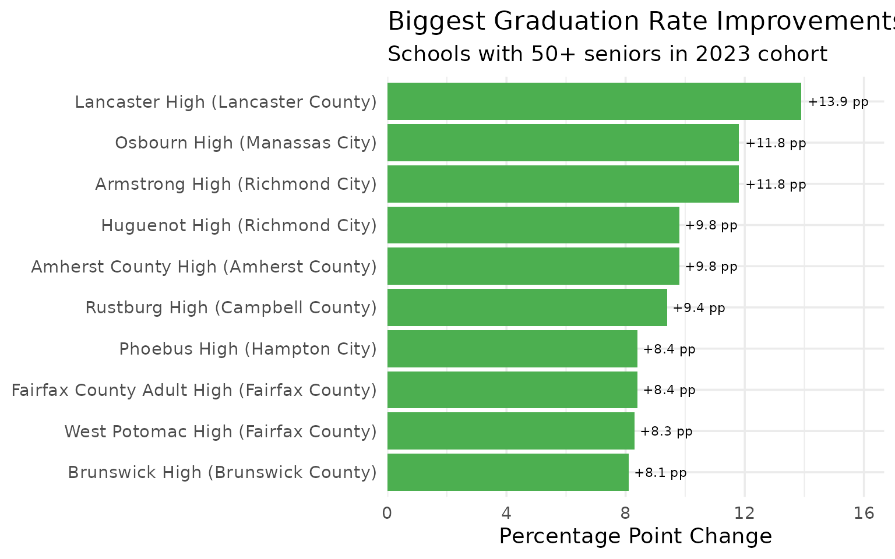
14. Division-level graduation gap: 72% to 100%
Virginia’s 130 school divisions span a 28-point graduation rate gap. Grayson County and Clarke County graduate nearly 100% of students, while Richmond City and Danville graduate fewer than 75%.
div_grad <- all_grad |>
filter(is_school, diploma_type == "all", end_year == 2023) |>
group_by(division_name) |>
summarize(
cohort = sum(cohort_size, na.rm = TRUE),
graduates = sum(total_graduates, na.rm = TRUE),
grad_rate = graduates / cohort,
.groups = "drop"
) |>
filter(cohort >= 50)
cat("Top 5 divisions:\n")
#> Top 5 divisions:
div_grad |> arrange(desc(grad_rate)) |>
head(5) |>
mutate(grad_pct = round(grad_rate * 100, 1))
#> # A tibble: 5 × 5
#> division_name cohort graduates grad_rate grad_pct
#> <chr> <int> <int> <dbl> <dbl>
#> 1 Grayson County 116 116 1 100
#> 2 Clarke County 146 145 0.993 99.3
#> 3 Norton City 67 66 0.985 98.5
#> 4 Falls Church City 200 197 0.985 98.5
#> 5 Bland County 65 64 0.985 98.5
cat("\nBottom 5 divisions:\n")
#>
#> Bottom 5 divisions:
div_grad |> arrange(grad_rate) |>
head(5) |>
mutate(grad_pct = round(grad_rate * 100, 1))
#> # A tibble: 5 × 5
#> division_name cohort graduates grad_rate grad_pct
#> <chr> <int> <int> <dbl> <dbl>
#> 1 Richmond City 1483 1073 0.724 72.4
#> 2 Danville City 393 288 0.733 73.3
#> 3 Prince Edward County 157 126 0.803 80.3
#> 4 Fredericksburg City 270 219 0.811 81.1
#> 5 Norfolk City 1800 1475 0.819 81.9
stopifnot(nrow(div_grad) > 0)
extremes <- bind_rows(
div_grad |> arrange(desc(grad_rate)) |> head(5) |> mutate(group = "Top 5"),
div_grad |> arrange(grad_rate) |> head(5) |> mutate(group = "Bottom 5")
)
extremes |>
mutate(division_name = forcats::fct_reorder(division_name, grad_rate)) |>
ggplot(aes(x = grad_rate, y = division_name, fill = group)) +
geom_col() +
scale_x_continuous(labels = scales::percent, limits = c(0, 1.05)) +
scale_fill_manual(values = c("Top 5" = "#2E7D32", "Bottom 5" = "#D32F2F")) +
labs(
title = "Virginia Division Graduation Rates: Top and Bottom 5 (2023)",
subtitle = "Among divisions with 50+ seniors",
x = "Graduation Rate",
y = NULL,
fill = NULL
)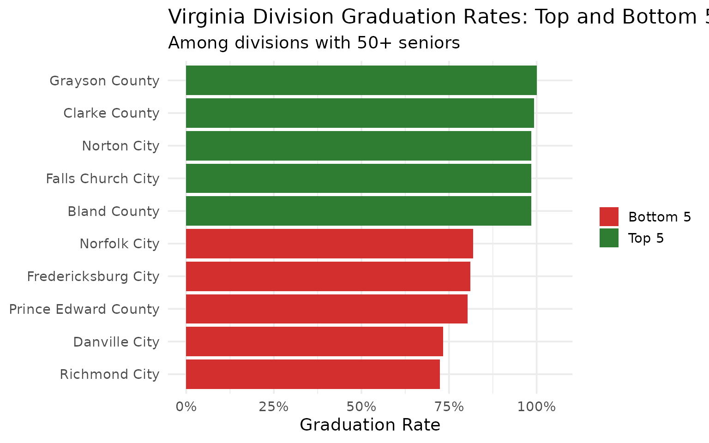
15. Five years, 490,000 graduates
From 2019 to 2023, Virginia graduated 452,834 students across five cohorts totaling 490,872 seniors. The state maintains roughly 320 high schools.
summary_stats <- all_grad |>
filter(is_state, diploma_type == "all") |>
summarize(
years = n(),
total_cohort = sum(cohort_size, na.rm = TRUE),
total_graduates = sum(total_graduates, na.rm = TRUE),
total_dropouts = sum(dropouts, na.rm = TRUE),
avg_grad_rate = round(mean(graduation_rate) * 100, 1)
)
summary_stats
#> # A tibble: 1 × 5
#> years total_cohort total_graduates total_dropouts avg_grad_rate
#> <int> <int> <int> <int> <dbl>
#> 1 5 490872 452834 24927 92.3
school_counts <- all_grad |>
filter(is_school, diploma_type == "all") |>
group_by(end_year) |>
summarize(n_schools = n_distinct(school_name), .groups = "drop")
school_counts
#> # A tibble: 5 × 2
#> end_year n_schools
#> <int> <int>
#> 1 2019 316
#> 2 2020 318
#> 3 2021 317
#> 4 2022 316
#> 5 2023 320
yearly_summary <- all_grad |>
filter(is_state, diploma_type == "all") |>
select(end_year, cohort_size, total_graduates)
stopifnot(nrow(yearly_summary) > 0)
yearly_long <- yearly_summary |>
pivot_longer(cols = c(cohort_size, total_graduates),
names_to = "measure", values_to = "count") |>
mutate(measure = ifelse(measure == "cohort_size", "Cohort", "Graduates"))
ggplot(yearly_long, aes(x = end_year, y = count, fill = measure)) +
geom_col(position = "dodge") +
scale_y_continuous(labels = scales::comma) +
scale_fill_manual(values = c("Cohort" = "#B0BEC5", "Graduates" = "#003366")) +
labs(
title = "Virginia Cohort Size vs. Graduates (2019-2023)",
subtitle = "490,000+ seniors over five years",
x = "Cohort Year",
y = "Number of Students",
fill = NULL
)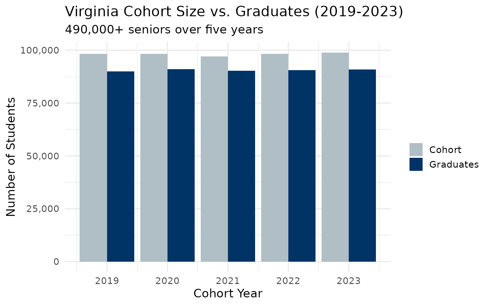
Summary
Virginia’s graduation data reveals:
- Steady state rate: 91.6%-93.0% graduation rate, well above the national average
- Advanced Studies dominance: More than half of graduates earn the rigorous Advanced Studies diploma
- Richmond’s challenge: At 72%, the capital city lags the state by nearly 20 points
- NoVA strength: Loudoun County leads at 96.7%, but even Fairfax (93.4%) has risen steadily
- Coalfield resilience: Southwest Virginia divisions like Wise County (98.3%) outperform NoVA
- COVID effect: The 2021 cohort saw the highest graduation rate and lowest dropout rate
- 5,300 annual dropouts: Virginia still loses thousands of students before graduation each year
Data Notes
Enrollment data source: Virginia Department of Education (VDOE) School Quality Profiles
Graduation data source: VDOE Open Data Portal (Cohort Graduation and Dropout Report)
Available years: Enrollment 2016-2024 (9 years); Graduation 2019-2023 (5 years)
Entities: State, 132 school divisions (Virginia’s term for districts), ~2,100 schools (enrollment), ~320 high schools (graduation)
Enrollment subgroups: Total enrollment, race/ethnicity (white, black, Hispanic, Asian, multiracial, Native American, Pacific Islander), gender
Graduation data: 4-year cohort graduation rate, dropout rate, completion rate, diploma types (Advanced Studies, Standard, IB, Applied Studies, GED, ISAEP, Certificate)
Suppression: Small counts suppressed for student
privacy (marked as < in raw data, NA in
processed data)
Census Day: Fall membership count (typically late September/early October)
CAPTCHA note: VDOE’s School Quality Profiles site
occasionally requires CAPTCHA verification for enrollment data. When
this happens, use use_cache = TRUE (default) to rely on
locally cached data. Graduation data is always available via the Open
Data Portal.
Data sourced from the Virginia Department of Education (VDOE).
Session Info
sessionInfo()
#> R version 4.5.2 (2025-10-31)
#> Platform: x86_64-pc-linux-gnu
#> Running under: Ubuntu 24.04.3 LTS
#>
#> Matrix products: default
#> BLAS: /usr/lib/x86_64-linux-gnu/openblas-pthread/libblas.so.3
#> LAPACK: /usr/lib/x86_64-linux-gnu/openblas-pthread/libopenblasp-r0.3.26.so; LAPACK version 3.12.0
#>
#> locale:
#> [1] LC_CTYPE=C.UTF-8 LC_NUMERIC=C LC_TIME=C.UTF-8
#> [4] LC_COLLATE=C.UTF-8 LC_MONETARY=C.UTF-8 LC_MESSAGES=C.UTF-8
#> [7] LC_PAPER=C.UTF-8 LC_NAME=C LC_ADDRESS=C
#> [10] LC_TELEPHONE=C LC_MEASUREMENT=C.UTF-8 LC_IDENTIFICATION=C
#>
#> time zone: UTC
#> tzcode source: system (glibc)
#>
#> attached base packages:
#> [1] stats graphics grDevices utils datasets methods base
#>
#> other attached packages:
#> [1] ggplot2_4.0.2 tidyr_1.3.2 dplyr_1.2.0 vaschooldata_0.1.0
#>
#> loaded via a namespace (and not attached):
#> [1] utf8_1.2.6 rappdirs_0.3.4 sass_0.4.10 generics_0.1.4
#> [5] stringi_1.8.7 hms_1.1.4 digest_0.6.39 magrittr_2.0.4
#> [9] evaluate_1.0.5 grid_4.5.2 RColorBrewer_1.1-3 fastmap_1.2.0
#> [13] jsonlite_2.0.0 httr_1.4.8 purrr_1.2.1 scales_1.4.0
#> [17] codetools_0.2-20 textshaping_1.0.4 jquerylib_0.1.4 cli_3.6.5
#> [21] rlang_1.1.7 crayon_1.5.3 bit64_4.6.0-1 withr_3.0.2
#> [25] cachem_1.1.0 yaml_2.3.12 tools_4.5.2 parallel_4.5.2
#> [29] tzdb_0.5.0 forcats_1.0.1 curl_7.0.0 vctrs_0.7.1
#> [33] R6_2.6.1 lifecycle_1.0.5 stringr_1.6.0 fs_1.6.6
#> [37] bit_4.6.0 vroom_1.7.0 ragg_1.5.0 pkgconfig_2.0.3
#> [41] desc_1.4.3 pkgdown_2.2.0 pillar_1.11.1 bslib_0.10.0
#> [45] gtable_0.3.6 glue_1.8.0 systemfonts_1.3.1 xfun_0.56
#> [49] tibble_3.3.1 tidyselect_1.2.1 knitr_1.51 farver_2.1.2
#> [53] htmltools_0.5.9 rmarkdown_2.30 labeling_0.4.3 readr_2.2.0
#> [57] compiler_4.5.2 S7_0.2.1